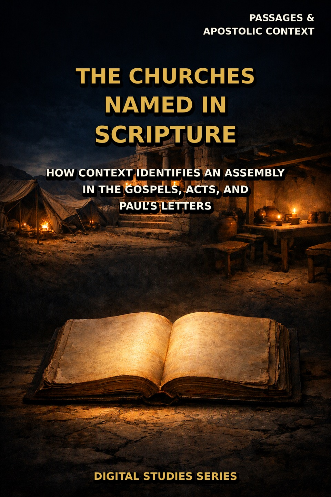
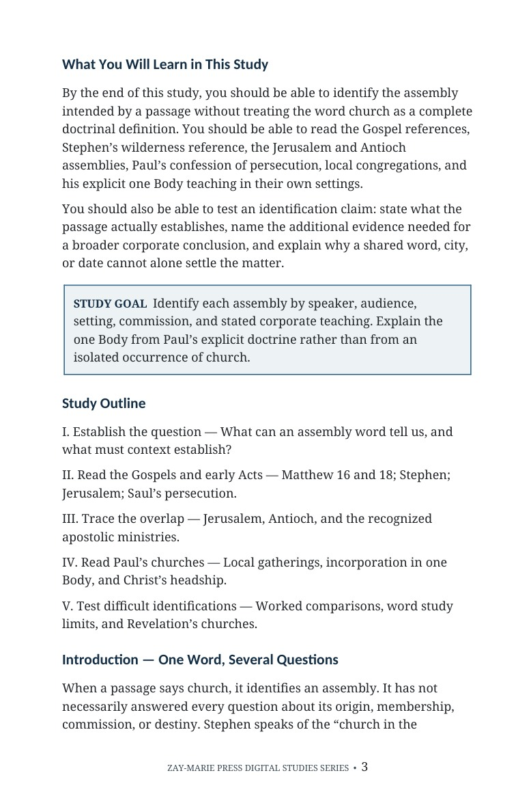
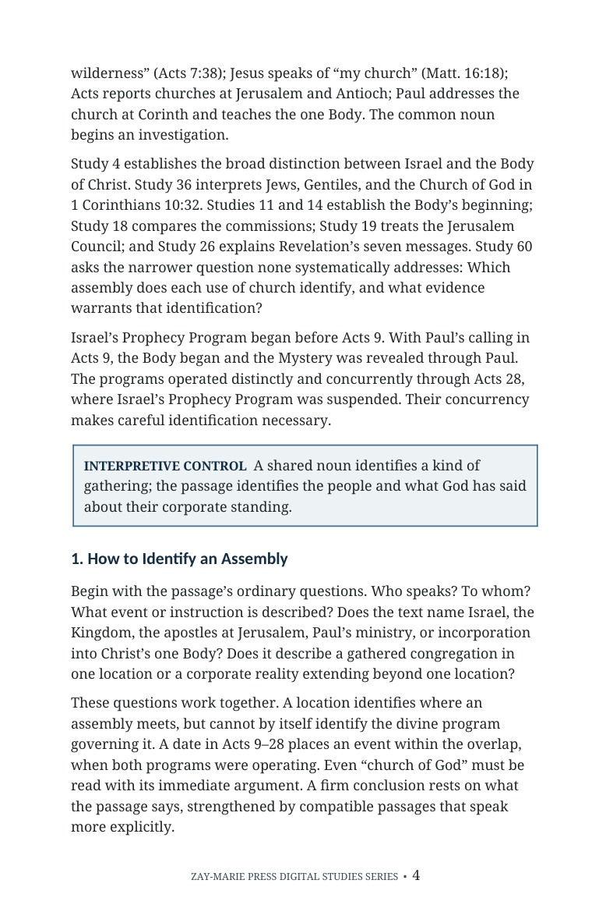

The Churches Named in Scripture
How Context Identifies an Assembly in the Gospels, Acts, and Paul’s Letters
When Scripture says “church,” which assembly does it identify?
The word church does not supply a complete corporate identity by itself. Read the speaker, audience, setting, commission, and revealed teaching before assigning an assembly’s place in Scripture.
This study follows the term through Matthew, Stephen’s wilderness reference, Jerusalem and Antioch during the Acts Overlap, Saul’s persecution, and Paul’s local congregations and explicit one Body teaching.
Identify the Assembly in Its Own Setting
“Church” can name an assembly without telling the reader everything about its identity. The study tests Matthew’s language, Acts’ narrative references, the assembly Saul persecuted, and Paul’s explicit description of the Church as Christ’s Body. Its worked examples show how to state what a passage proves and where a broader conclusion needs further evidence.
Study 4 establishes Israel’s and the Body’s distinct corporate identities. Study 36 examines the threefold designation in 1 Corinthians 10:32. Study 60 asks the narrower question of how a particular occurrence of church should be identified in context; it also complements Study 38’s control on narrated events and leaves the seven churches of Revelation to Study 26.
How These Studies Relate
Study 60 supplies a passage-level identification procedure. These studies establish broader identities or examine specific settings that the word study touches.
Study 4 — Israel and the Body of Christ Establish the distinct corporate identities and promises; Study 60 asks whether a given passage actually names either corporate people.
Study 36 — Jews, Gentiles, and the Church of God Examine Paul’s threefold language in its practical argument; Study 60 tests church across more settings and uses.
Study 38 — Why Acts Is Not a Universal Experience Manual Separate narrated events from universal obligations after identifying the assembly involved in the event.
Study 26 — The Seven Churches of Revelation Follow those assemblies and their prophetic setting in detail; Study 60 gives only the boundary of its own survey.
Ask What the Passage Actually Establishes
The Identification Test
Read speaker, audience, setting, commission, and stated corporate teaching.
Matthew’s References
Test what Matthew 16 and 18 say within their own Kingdom setting.
Acts’ Assemblies
Distinguish Stephen’s wilderness reference, Jerusalem, and Antioch.
Saul’s Persecution
Handle Paul’s retrospective “church of God” language without assuming a corporate starting date.
Local and Corporate
Distinguish a local congregation from Paul’s explicit one Body teaching.
Worked Tests
Apply the procedure to three disputed identifications.
Read the Word in Its Context
Matthew 16:13–20; 18:15–20
Jesus’ assembly language and its immediate setting.
Acts 7:38; 19:32–41
Assembly language does not itself establish a Christian corporate identity.
Acts 8:1–3; 11:19–26
Jerusalem, Saul’s persecution, and Antioch in the narrative.
Galatians 1:13, 22
Paul’s retrospective account and the churches of Judea.
1 Corinthians 10:32; 12:12–27
Paul’s category language and his explicit Body teaching.
Ephesians 1:22–23; Colossians 1:18, 24
The Church identified as Christ’s Body under His headship.
A Word Is the Beginning of the Question
A concordance can locate occurrences, but it cannot decide identity without reading the passage.
State what the passage says about the gathering, then test any broader claim against the apostolic teaching that actually defines it.
Preview the Study Before You Purchase
Click any page to enlarge it for reading.



Learning Outcomes and Study Goal
See the study’s scope and reading procedure.


The Identification Question
Read the opening method before the detailed passage tests.
A Focused Study of Scripture’s Assemblies
18-Page Digital PDF
Approved cover and 17-page numbered interior.
18 Teaching Sections
A passage-driven study across the Gospels, Acts, and Paul.
Worked Identification Tests
Practice stating what a text establishes and what it leaves open.
Interpretive Controls
Keep shared words, places, and dates from deciding identity alone.
Scripture-Tracing Exercise
Record each assembly’s speaker, audience, setting, and teaching.
Teaching and Further Study
Use guided readings and discussion questions to test the argument.
The Churches Named in Scripture
18-page digital PDF · For personal use